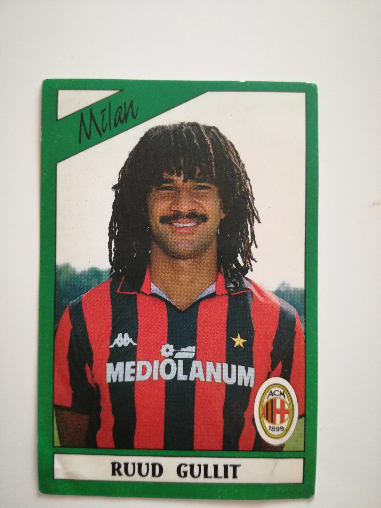

Ruud Gullit

Ruud Gullit è stato uno dei giocatori chiave del Milan degli anni '80, vincendo il Pallone d'Oro e la Coppa dei Campioni.
Ruud Gullit è stato uno dei giocatori chiave del Milan degli anni '80, vincendo il Pallone d'Oro e la Coppa dei Campioni.